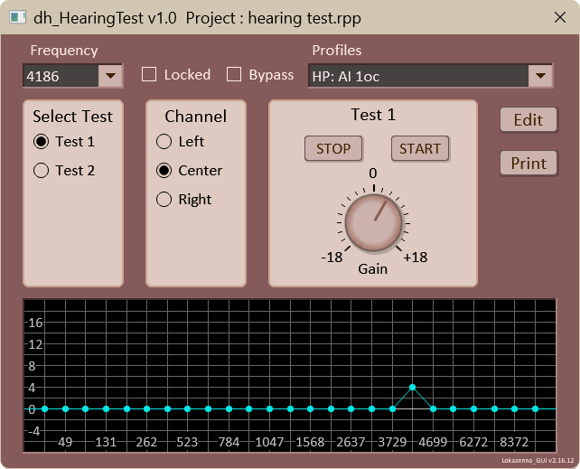
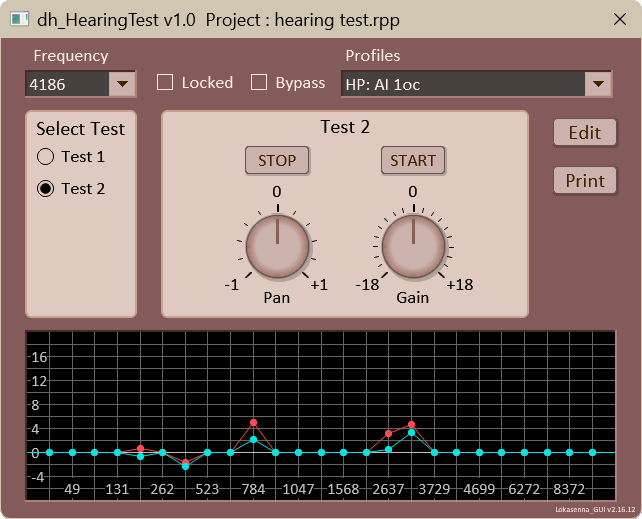
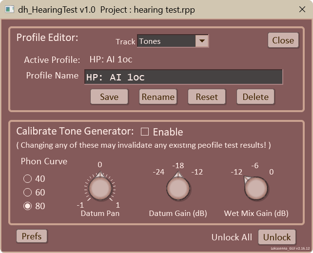

Fletcher-Munson curves are datasets of perceived equal loudness to a reference frequency at a particular sound pressure level. The Fletcher-Munson curve of 60 phon is defined as 60dB sound pressure level (at your ears) at 1Khz. 60dB is considered the level of normal conversation. If calibrating to 60dB SPL then you use the 60 phon curve for the subsequent tests. The starting loudness of the other frequencies will be adjusted using the curves.
An explanation of equal loudness can be found at:
datum: This is the base frequency for which to which the test tones will be compared to.
test tone: This is the frequency for which the gain gets adjusted to achieve perceived equal loudness.
dBFS: decibels full scale. The maximum level which can be reached without clipping. If a track has an input signal at a level of -12dBFS, as is the case with the default calibration using the tone generator wet mix gain set at -12dB, then this is added to the track gain. The track gain of -18dB is referenced to the reaper track 0 which is -12dBFS. So the track gain of -18dB is actually -30dBFS. Therefore, adding the input signal of -12dBFS to the actual track gain of -32dBFS yields an output signal of -42dBFS.
SPL: Sound pressure level produced by the speakers/headphones. A tone creates waves in the air. The waves create a pressure. We are mainly concerned with the SPL at the eardrums, which is where we begin to perceive sound. Ideally measured with a sound pressure meter.
IMPORTANT: The script is tied to a particular project that you have set up with a track that has a tone generator inserted. The script must be opened with that project as the active project. If you have more than one project tab open, be sure that the project you intend to use the script with is the active project. The test parameters and test results are stored in profiles which are saved in the active project's file. The project that you opened the script in is shown in the script's title bar.
If you open the script while you have a different project active then you will not have access to the desired data. If you try to close the script with a different project active then the script will try to save the data to the proper project, as long as the correct project is still open. If it isn't then there is nothing you can do at that point. Once the close button is clicked there is no way to stop the script from closing.
I chose 1047Hz (note C6) as the datum frequency, as it is close to the 1Khz frequency from which the Fletcher-Munson equal loudness curves were derived. I could have used the true 1000Hz reference, but the difference is small and is compensated for.
I've read somewhere that headphones are better than speakers for discriminating loudness differences at lower frequencies, and poorer at high frequencies.
I have found that when listening with speakers, at least with my gear set-up, that at higher frequencies ear position is a major factor in perceived loudness. Turning or moving my head just slightly causes drastic changes in perceived loudness. This may be due to speaker sweet spots, and/or room resonances.
Perceived loudness difference is greater at soft listening levels than at loud levels.
At higher sound pressure levels it takes less gain to perceive equal loudness. My preliminary testing bears this out.
(See images below)
Frequency selection box: Select a frequency for testing.
Locked checkbox: If checked then the frequency is not available for testing. This is useful to prevent overwriting test results once a frequency has been tested.
Bypass checkbox: Does not affect any testing. If it is checked then any resulting test data, although it will be saved, will not be included in the resulting dataset.
Profiles selection box: This has the names of all rhe saved profiles. Select one to make it active. The active profile's parameters will be used to conduct the tests, and the test results will be saved to it.
Select Test radio box: Select which test type to run. The controls for the selected test type will appear to the right. The different test types are elaborated on further down.
Edit button: This opens the Profile editor. The Profile editor is elaborated on further down.
Print button: Prints the active profile's test data to the script console.
Graph: The graph plots a point for each frequency of the active profile. If Test 1 is active then is displays those of the active channel.
Create a new project. Name it "Hearing Test", or whatever you wish.
Insert a new track.
Insert a JS tone generator on that track.
Disable the tone generator so it isn't outputting a tone.
Leave tone generator wet mix gain at default -12dBFS.
The default track gain is set to -18db (-30dB Full Scale). This can be changed in the Calibration section of the Profile editor.
Set the pan law. On the track with the tone generator right-click on the pan knob. This opens the Pan Law dialog box. Make sure that the Pan mode is set to "Stereo balance". Check the "Override default track pan law" then select -3dB. Gain compensation can be unchecked. Use the Sine taper.
Effect of pan law override: datum_gain -18dB wet_mix_gain -12dBFS -- track output signal -- left center right -38.2 -41.2 38.2 with 0dB override -41.2 -41.2 41.2 with -3dB override
IMPORTANT! The tone generator gain settings and the track gain must not be changed throughout testing, or it will invalidate the active profile's test results. Tests may be set up with the wet mix gain and/or the track gain at a different level than the default. Do this by making the adjustments in the Calibration section of the Profile editor. More on this later.
The DAW settings level should now be -42dBFS. This should leave plenty of headroom for running the tests. The tests add the datum gain, the equal loudness gain, and any additional gain using the test gain adjustment knob. These settings represent the level sent to your output device: audio interface, speakers, headphones, etc.; not the sound pressure at your ears.
The sound pressure level in decibels that you hear is determined not only by the above DAW settings, but by any hardware settings between your DAW, up to and including your headphones/speakers. You will need to set your headphones / speakers to 60db sound pressure level at listening position when using the phon_60 dataset. If using the phon_80 dataset set the SPL to 80dB. Ideally this is accomplished by using a sound pressure meter (more on this later).
Do this by adjusting an audio interface or your speaker output directly. If those options are not available you will need to adjust the tone generator gain to achieve the desired levels, as noted above.
The Calibration section of the Profile editor (accessed using the Edit button) contains the controls that can be used to adjust the test's datum frequency parameters. The script should have set the tone generator to use note "C" and octave +1. This is our datum frequency of 1047Hz.
Enable checkbox: Use to toggle the tone generator output on or off.
Phon Curve radio box: Use to select which equal loudness curve is used for the tests.
Datum Pan knob: Used to set the datum tone to the perceived center of the audio field. This is used only for Test 2.
Datum Gain knob: Used to set the gain of the reference tone.
Wet Mix Gain (tone generator) knob: Use to set the wet mix gain of the tone generator. This can be considered as the input signal to the track even though it is being generated "within" the track.
If setting the gain knobs to other than the defaults be careful to avoid clipping.
Enable the tone generator to set the speaker/headphone levels to the appropriate SPL level indicated by the phon curve you are using.
Adjust the speaker/headphone volume (or the tone generator gain) until the appropriate sound pressure level is achieved at your ears (60dB SPL when using the phon_60 curve). If you don't have an SPL meter there are some phone apps available. I cannot attest to their efficacy. They rely entirely on the quality of your device's mictophone. Or you can guess (highly subjective).
The Fletcher-Munson curves all have basically the same shape, except for their scale. So, if you're not exactly at the correct phon level, the perceived gain differences will be in the correct direction, and should be in, although far from optimal, an acceptable range. Except maybe the very low and very high frequencies which have a greater equal loudness factor.
Assuming normal conversation is 60dB, and assuming that your mid-range hearing is okay (here comes the very subjective part):
Adjust the speaker volume until you think that the datum tone is at that of normal conversation.
Once you have your test calibrated this becomes the level for which the entire test is based. This level must not be changed or it invalidates all other test measurements.
Note the settings. I run my output through an audio interface, then through a Big Knob to the speakers. If I want to repeat or continue the test later, I will need to duplicate those settings. I try to include these in the name of the profile: [ speaker level / headphones level; etc. ]
Proceed to the test now that 'calibration' is done.
Select which test to run using the Select Test radio box.
Make sure that the track that has the tone generator inserted is selected in the Track select box.
Make sure the Locked checkbox is not checked. If checked that frequency is considered locked and a test cannot be performed on it.
Test parameters and results are saved in profiles. All profiles are auto-saved when the script is closed.

Select a frequency (other than the 1047Hz reference) to test.
In the Channel radio box select which channel is to be used for the test: left, center, or right. Test results will be saved for each channel/frequency tested.
Press the Start button to start the test.
The tone generator will produce bursts of tones alternating between the selected frequency and the test frequency. Use the Gain knob to adjust the test frequency's loudness until it appears equal to the reference tone.
When satified press the Stop button to end that frequency test. The test results will be saved to the active profile..
Repeat for each desired frequency and/or channel.

Select a frequency (other than the 1047Hz reference) to test.
Press the Start button to start the test.
The tone generator will produce bursts of tones alternating between the selected frequency and the test frequency. Use the Gain knob to adjust the test frequency's loudness until it appears equal to the reference tone. Use the Pan knob to adjust the test tone so that it sounds centered.
When satified press the Stop button to end that frequency test. The test results will be saved to the active profile..
Repeat for each desired frequency and/or channel.
A test set up and all its test results are saved as a profile. This is useful if you use different configurations for your tests. You may have one profile for using a particular set of headphones, and another for using a pair of monitors. The Profiles selection box contains the names of all saved profiles, including a somewhat default one named "Working Copy".
The active profile is the shown in the "Profiles" selection box on the script's main page. The Profiles editor is used to operate on the data of the profile. Tests use this data for their performance as long as it is active. Test results are also saved to the active profile.
Click the Edit button located at the right of the script window to open the Profiles editor. There you can add, rename, or delete profiles. Profiles are saved in in the active project's file.
IMPORTANT! Be sure you open the script with the correct project active. If the script is opened with a different project it will not have access to any saved profiles in a different project. Profiles were originally saved in reaper-extstate.ini file. During development that section of the file got corrupted. It didn't do any damage beyond no longer being able to access any saved profiles. I decided then to save the data with the project. Be sure to have the Hearing Test project active when opening the script.

Track selection box: Displays the track that has the tone generator inserted. When the script loads it seaches the project for it. If it didn't find it, it may be that a tone generator hasn't been inserted. If that is the case then insert a tone generator then select the track from the selection box.
Active Profile: Label above the Profile name displays the name of the active profile. This will get updated if saving, renaming, or deleting the profile.
Profile Name textbox: Displays the name that will be used for the saving, renaming, and deleting operations. Edit it as use see fit.
Save button: This uses the text in the Profile Name
textbox for its operations. It the text is different than the
Active Profile name then the a new profile will be saved
using the name in the textbox. If the text is the same then
the active profile is immediately saved to the project file.
If a new profile is created it becomes the active profile.
You will be prompted to confirm an overwrite.
Rename button: Use to rename the active profile.
The new name is the text in the textbox.
The Active Profile name gets updated with the new profile name.
You will be prompted to confirm an rename.
Delete button: Use to delete the active profile.
The profile "Working Copy" will become the active profile.
You will be prompted to confirm an delete.
Reset button: Replaces all of the calibration
and test data of the active profile with default data.
You will be prompted to confirm a reset.
Calibrate Tone Generator section was discussed earlier.
Prefs button: Use to open the Preferences window where you can change the script window scale and/or theme.
Unlock All button: Use to unlock all of the frequencies.
Click the Print button to write the data of the active profile to the console window. You can use this data to set up an equalizer to compensate for any hearing deficiencies you may have. If the data shows that you have a hearing deficiency (as compared to "normal" hearing) then you can insert a band at that frequency, boosting its gain to compensate. You would probably want to adjust it's Q for a smooth transition.
Use the equalizer as the last fx on your master track. Enable the equalizer to hear your music closer to how someone with normal hearing hears your music. Disable the equalizer to remove your adjusted bias from the mix. Personally, I will probable use an equalizer for each channel as I have significant differences in my hearing perception between my left and right ear.